这篇文章主要介绍一下二分查找算法，以及几个题目。如果你还不懂二分查找算法，那么往下看（大佬止步😄）。
1. 什么是二分查找？
二分查找基于这样的问题背景，就是在一个有序的数组中（不妨假设从小到大排序），如何快速地确定一个数$x$是否存在。容易想到的做法是，遍历一遍数组，如果能找到就返回true，否则返回false。这样的做法最坏情况下时间复杂度是$O(N)$，并且与数组是否有序没有什么关系了。那么能否根据数据有序的条件，加速求解过程呢？
要判断一个数是否在一个数组中，那么必须在这个数组中找到这个数，才可以认为是存在的，否则不存在。对于这个问题，这个道理是死的。那么就看怎么找了，二分查找不像顺序查找那样，一个一个确认是不是这个数$x$，而更像是一种排除法，不断排除$x$不可能在的区间，直到找到$x$，或者排除掉所有的数。
算法描述如下：首先设置一个左指针lo，和右指针hi，lo初始化为0（数组第一个下标），hi初始化为数组最后一个元素的下标。现在假设lo和hi之间存在$x$这个数，那么我们取lo和hi中间的位置mid，
- 如果mid位置的数是$x$，那么直接返回true；
- 否则mid位置的数不等于$x$，那么和$x$一定存在大小关系：
- 如果mid位置的数大于$x$，根据数组的有序性，说明从mid到hi位置这个区间的所有数，都大于$x$，那么可以排除掉这一部分；
- 如果mid位置的数小于$x$，根据数组的有序性，说明从lo到mid位置这个区间的所有数，都小于$x$，那么可以排除掉这一部分；
直到lo>hi，说明没有找到$x$这个数，返回false。如下图所示：

对于这个查找过程，可以写出如下代码：
1 | public class BinarySearch { |
2. lower_bound 问题
在一个升序的有序数组中，例如{0,1,1,3,3,5,5,5,6,8}，找出从左到右遍历的时候，发现的第一个大于等于2的位置。这个问题的意思是，从左到右遍历数组，如果发现一个数大于等于2，那么就返回它的下标。这个方法的时间复杂度显然是$O(N)$，我们需要优化这个时间复杂度的问题。其实就是在这个有序数组中，找大于等于2的最左边的位置，如果数组中所有的元素都小于2，那么返回数组的长度（越界位置）。
因为数组有序的，这个问题可以考虑使用二分法来解决。假设数组长度是len，目标数target，我们使用一个左指针lo和右指针hi，分别指向0位置和len位置，我们取中间位置mid，
- 如果mid位置的数大于等于target，那么说明从mid+1 到 hi之间的所有数，都大于等于target，因为我们要找的是最左的位置，于是可以知道，从mid+1 到 hi之间的所有位置，都不是答案，于是排除这些位置；
- 如果mid位置的数小于target，那么说明从lo到mid之间的所有数，都小于target，它们都不可能是答案，于是排除这些位置。
因为答案一定存在于lo和hi之间，我们排除完所有不符合要求的位置，剩下的那个位置就是答案，所以当lo == hi的时候，返回这个位置即可。如下图所示：

代码如下：
1 | import java.util.Random; |
注意第5行代码中while的条件，不能写<=，否则就会死循环。这是因为我们知道，答案一定在lo和hi之间，当lo和hi逐渐靠近的时候，最后相遇的那个位置，一定是答案（因为其他位置被我们排除了）。
在上面的二分查找中while的条件为什么要写<=呢，这是因为，我们是在一个数组中判断target是否存在，我们如果写成<的话，我们就有可能跳过一些可能性的验证。例如当改成<符号的时候，对于这样的数组{2,3,4}，当target=2的时候，就会出错了。
这个边界位置比较容易出错，请大家注意避坑。
3. 局部最小的位置
给定一个数组arr，如果数组中存在一个位置$i$，使得arr[i]<arr[i-1] && arr[i] < arr[i+1]成立，那么称这个位置是局部最小的位置，默认认为-1位置和数组最后一个元素的下一个位置是无穷大的，且数组中所有相邻的元素都不相同。请返回数组中任意一个局部最小的位置。
这个问题可以在时间复杂度$O(N)$内得到答案，是否有更好的做法呢？
根据题意可以知道，-1位置是无穷大的，那么从-1到0位置就是递减的，同理，数组最后一个元素那里是递增的，又因为数组中相邻的元素都不相同，那么数组中必然存在一个局部最小的位置。如下图所示：
那么如何找这个局部最小的位置呢？
我们设置两个指针lo和hi，分别初始化为0和数组最后一个元素的位置，可以知道，局部最小的位置一定存在$[lo,hi]$这个区间，当lo<hi的时候，执行下面的操作：
计算lo和hi的中间位置mid，此时我们考察mid和mid+1，mid-1这两个位置之间的数值关系，如果：
- mid位置的数小于mid-1位置的数，且小于mid+1位置的数，那么直接返回mid位置即可；
- 否则说明mid位置的数至少比mid-1位置的数大或者比mid+1位置的数大，如果
- mid位置的数比mid-1位置的数大，那么说明局部最小一定存在于$[lo,mid-1]$区间；也有可能会存在于$[mid,hi]$区间，但是我们知道了此时$[lo,mid-1]$区间一定会存在答案，于是我们可以舍弃$[mid,hi]$区间的可能性，不影响我们找到最终的答案。
- 否则mid位置的数比mid+1位置的数大，那么说明局部最小一定存在于$[mid+1,hi]$区间；也有可能存在于$[lo,mid-1]$区间中，但是同样原因，我们舍弃这个可能性。
当lo和hi相遇的时候，就返回lo即可，这个时间复杂度做到$O(\log_2N)$，如下图所示：

前面两个题目，我们是不知道答案在数组中的哪个范围，二分查找可以帮助我们排除掉一些根本不会成为答案的选择，从而缩小查询范围；但是在这里，我们知道答案所在的范围，我们需要舍弃一些可能答案的选择，从而缩小查找的范围。大家体会这样的思路。
代码如下：
1 | import java.util.Random; |